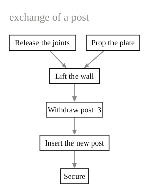
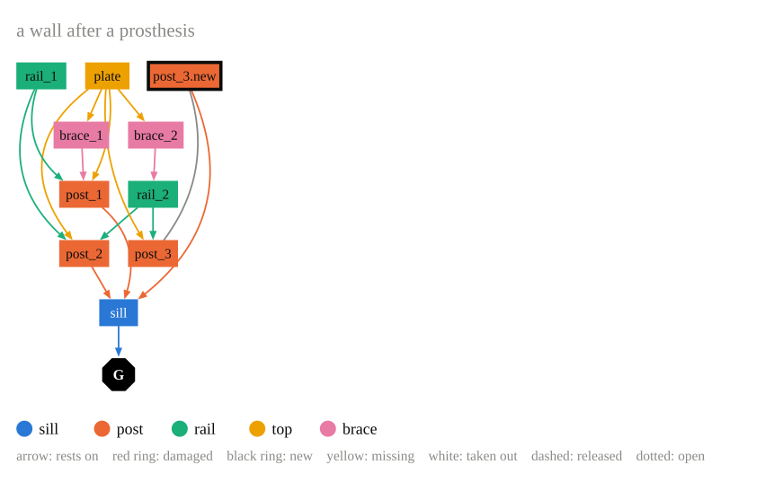

Drawing graphs¤
Steps¤
steps makes a graph of labelled steps, as a
chain or as any directed graph. layouts.layered
puts the steps in layers along the edges and orders each layer so that edges
cross as little as possible.
from graph_drawing import steps, layouts, draw
g = steps(
{"r": "Release the joints", "p": "Prop the plate", "l": "Lift the wall",
"w": "Withdraw post_3", "n": "Insert the new post", "s": "Secure"},
edges=[("r", "l"), ("p", "l"), ("l", "w"), ("w", "n"), ("n", "s")],
)
pos, regions = layouts.layered(g)
drawing = draw(g, pos, regions, title="exchange of a post")

Models¤
models.drawing draws a
compas_model Model
whose graph carries the state of an intervention, for example a state computed
with Intervention Grammar.
Members become boxes coloured by type, connections become arrows from the
carried member to the carrying one. With positions, every member is drawn
where it is in the structure:
from graph_drawing import models
# the middle of every member in the wall, in metres
where = {
"sill": (1.5, 0.0), "plate": (1.5, 2.2),
"post_1": (0.1, 1.1), "post_2": (1.5, 1.1), "post_3": (2.9, 1.3), "post_3.new": (2.9, 0.2),
"rail_1": (0.8, 1.1), "rail_2": (2.2, 1.1),
"brace_1": (0.4, 1.9), "brace_2": (2.2, 1.65),
}
positions = {name: (2.2 * x, 2.2 * y) for name, (x, y) in where.items()}
drawing = models.drawing(model, title="a wall after a prosthesis", positions=positions)

Without positions, the members are placed in layers along the arrows.
from_model gives the styled graph alone,
for another layout. It reads these attributes:
| On | Attribute | Values |
|---|---|---|
| element nodes | fabric |
"original", "new" (black ring) |
| element nodes | condition |
"sound", "damaged" (red) |
| element nodes | placement |
"in", "inserted", "out" (white, dashed), "missing" (yellow) |
| element nodes | type |
the role of the member, any name (colour) |
| element nodes | grounded |
True: an arrow to the ground node |
| connections | joint |
a joint description |
| connections | state |
"secured", "released" (dashed), "open" (dotted) |
| connections | at |
{element name: station} |
| connections | support |
(carried, carrier) or "both": the arrow |
Frames¤
frames.drawing reads the parts of a frame
from JSON, as boxes with their dimensions and rotations and the connections
each part lists, finds the contacts between the boxes and draws which part
rests on which. The format is that of data/timber_corner_structure.json
in the repository (schema 2.1.0). The drawing on the home page is
this file:
from graph_drawing import frames
drawing = frames.drawing("data/timber_corner_structure.json")
drawing.to_pdf("corner.pdf")
frames.report lists what the JSON and the
geometry disagree on, and frames.focus shows
how every part relates to a selected one: what it rests on, what rests on it,
and what loses all support from below once it is taken out.
Reading a support drawing¤
- Every wall gets a region (dashed box), placed like a plan seen from above. Inside a region the members stand in columns from the outside in: ground, sills, posts, braces and struts, one column per rail height, top beams. Members of two walls stand between the two regions, members of no wall in the middle.
- Codes: wall letter, type letter, number along the wall (
FR3is the front wall, rail 3),Ccorner. The black triangles are the ground. - Node colour is the member type, together with the type letter. Red ring: defective, yellow: missing, black ring: new.
- An arrow points from the carried part to the carrying part, coloured like the carried part. Solid: listed by both parts, dashed: listed by one, dotted: touching but not listed, red: listed but not touching.
Any graph¤
draw draws any compas.datastructures.Graph
with positions for its nodes. It reads these attributes:
| On | Attributes |
|---|---|
| nodes | label, fill, stroke and stroke_width (a ring), text_color, label_size, bold, shape ("circle", "octagon", "box"), radius, outline, fixed (never fades in a focus) |
| edges | color, width, dash ("dash", "dot"), arrow ("head", "both"), source (the edge it stands for), order (drawing order) |
Edges are drawn from their first node to their second. Curves avoid nodes first and crossings second, and stay straight where that is clear.
SVG and PDF¤
A Drawing writes itself as SVG text or as a
one-page PDF, both as vector graphics. It is a COMPAS Data object as well,
so it saves and loads as JSON.